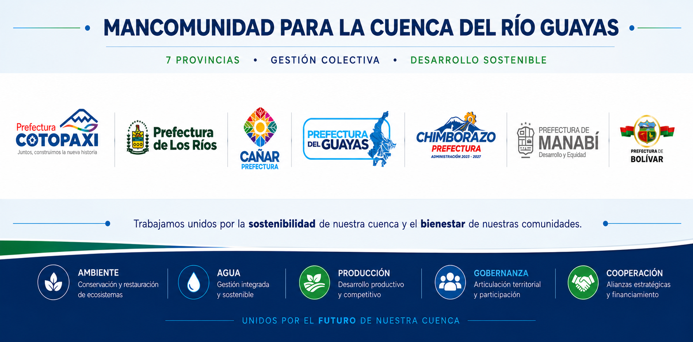

LA CUENCA DEL RÍO GUAYAS ES EL ACTIVO ESTRATÉGICO MÁS IMPORTANTE DEL ECUADOR
Mancomunidad para la Cuenca del Río Guayas
Cotopaxi, Los Ríos, Cañar, Guayas, Chimborazo, Manabí, y Bolivar, unidas para recuperar y proteger la cuenca hidrográfica más importante del Ecuador y de América del Sur en la vertiente del Pacífico.

¿Qué es la Mancomunidad?
La Mancomunidad para la Cuenca del Río Guayas (MCRG) es una alianza entre siete gobiernos provinciales —Guayas, Cañar, Manabí, Los Ríos, Bolívar, Chimborazo y Cotopaxi— que decidieron trabajar juntos para recuperar y proteger la cuenca hidrográfica más importante del Ecuador y de América del Sur en la vertiente del Océano Pacífico.
Nace para gestionar la cuenca como un solo sistema ecológico, hídrico y productivo, superando los límites político-administrativos.
La cuenca en cifras
El Observatorio de la Cuenca
Una plataforma de monitoreo geoespacial que reúne indicadores hídricos, ambientales y territoriales de la cuenca en un solo lugar, para apoyar decisiones basadas en evidencia.
Ingresar al Observatorio →Noticias
Eventos
Primera Asamblea de la MCRG
Marca el inicio de una nueva etapa en la gestión ambiental y territorial de la Cuenca del Río Guayas.
Convenio con la CAF
La CAF otorga un préstamo de cooperación técnica no reembolsable a la Prefectura del Guayas para formular una Estrategia de Gestión Ambiental Integral basada en gobernanza, diagnóstico, portafolio de intervenciones y financiamiento.
Creación de la Mancomunidad
Los prefectos de Guayas, Cañar, Manabí, Los Ríos, Bolívar, Chimborazo y Cotopaxi firman el convenio que da origen a la MCRG para la recuperación de la cuenca.